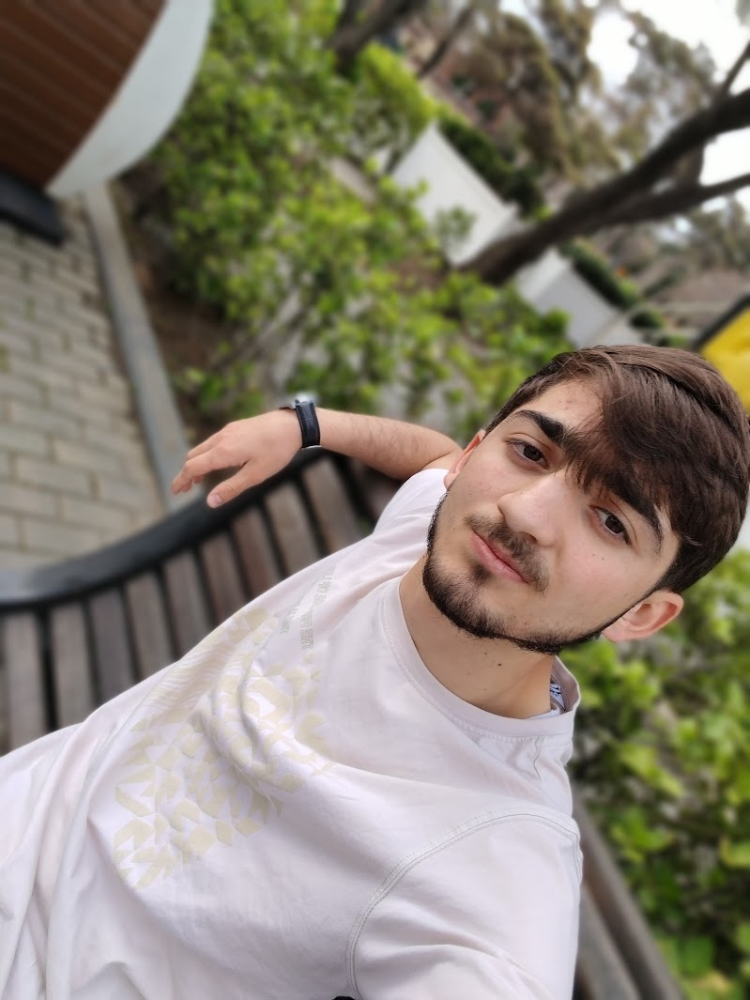

Natiq Shukurov
About me

Mən Natig Shukurov, Azərbaycan Texniki Universitetində Kompüter Elmləri ixtisası üzrə birinci kurs
tələbəsiyəm. Veb proqramlaşdırma sahəsinə böyük marağım var və bu istiqamətdə özümü davamlı olaraq
inkişaf etdirirəm. HTML, CSS, SCSS, JavaScript və Python biliklərim var. Eyni zamanda backend
sahəsinə keçid edərək Flask kimi texnologiyalarla tanış oluram və portfolioma real layihələr əlavə
edirəm.
Kompüter elmləri sahəsində həm nəzəri, həm də praktiki təcrübə qazanmaq üçün daim yeni biliklər
öyrənməyə çalışıram. Freelancer kimi kiçik layihələr üzərində işləyirəm və sosial şəbəkələrdə
fəaliyyət göstərərək özümü tanıtmağa çalışıram. Hədəfim – güclü bir full-stack developer olmaq və
real problemləri texnologiya vasitəsilə həll edən uğurlu layihələr yaratmaqdır.

Bacarıqlarım
Html5, Css3, Scss, Python(basic), JavaScript, Github, VercalApp, NetlifyApp

Təcrübəm
Veb proqramlaşdırma sahəsində ilk təcrübəmi öz layihələrim üzərində işləməklə qazandım. HTML,
CSS, SCSS və JavaScript-dən istifadə edərək fərdi portfoliom və sadə blog saytları yaratmışam.
Freelancer kimi kiçik frontend layihələri hazırlamışam və bu sahədə davamlı
inkişaf edirəm. Hal-hazırda real layihələrdə iştirak etməklə praktiki biliklərimi daha da
gücləndirməyə çalışıram.

Təhsilim
Mən hal-hazırda Azərbaycan Dövlət Texniki Universitetində Kompüter Elmləri ixtisası üzrə
təhsilimi davam etdirirəm. Təhsil prosesində proqramlaşdırma və informasiya texnologiyaları
sahəsində biliklərimi artırıram. Gələcəkdə bu sahədə peşəkar mütəxəssis olmaq və innovativ
həllər yaratmaq istəyirəm.